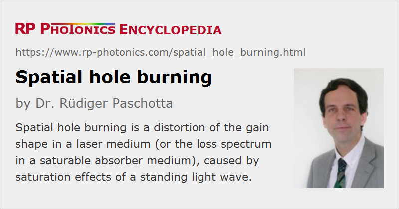

Spatial Hole Burning
Acronym: SHB
Definition: a distortion of the gain shape in a laser medium (or the loss spectrum in a saturable absorber medium), caused by saturation effects of a standing wave
German: räumliches Lochbrennen
Categories: lasers, physical foundations
How to cite the article; suggest additional literature
Author: Dr. Rüdiger Paschotta
When counterpropagating narrow-bandwidth light waves are superimposed, they form a so-called standing-wave interference pattern, the period of which is half the wavelength. In a laser gain medium, this has two effects:
- The gain is saturated preferentially in the antinodes of the pattern.
- The resulting amplification is dominated by the excitation density in the antinodes, as the nodes are not “seen” by the light wave.
This can lead to a deformation of the spectral shape of the gain (→ inhomogeneous gain saturation), in particular to a gain saturation which is stronger for the wavelength of the saturated light field than for some other wavelengths.
Similarly, the loss spectrum of a saturable absorber medium can obtain a dip. The latter effect can occur e.g. in a rare-earth-doped fiber and is the basis for, e.g., the construction of an automatic tracking filter, as is sometimes used in the context of single-frequency fiber lasers.
Spatial hole burning can have various consequences for the operation of lasers:
- The effect can make it difficult to achieve single-frequency operation with standing-wave laser resonators, because the lasing mode experiences stronger gain saturation than competing non-lasing modes.
- The optical bandwidth of a free-running laser (with excitation of multiple axial modes) may be much larger, when the gain medium is near an end of the laser resonator, rather than e.g. in the middle. This is because resonator modes with similar optical frequencies have strongly overlapping intensity patterns near the resonator ends, but not in the middle of the resonator. The spatial variation of the interference contrast can be easily calculated when assuming a Gaussian optical spectrum [9].
- The effective broadening of the gain spectrum (increased gain bandwidth) sometimes leads to shorter (although often chirped) pulses in mode-locked lasers.
- When spatial hole burning occurs in a saturable absorber section e.g. of a fiber laser, this effect tends to stabilize single-frequency operation [9].
- Spatial hole burning can reduce the laser efficiency, when the excitation in the nodes can not be utilized. This effect may be avoided, however, if energy migration via inter-ion energy transfer occurs.
Note that ring resonators often allow counterpropagating waves in the laser medium to be avoided and thus spatial hole burning to be eliminated. Even in standing-wave (linear) resonators, spatial hole burning can be suppressed by the use of special polarization states (→ twisted-mode technique). Also note that the hole burning effect is suppressed for lasing with a sufficiently large bandwidth. This is often the case in, e.g., mode-locked lasers; here it is obvious already in the time domain that a circulating pulse can not overlap (interfere) with itself in the gain medium, unless the time for traveling from the gain medium to an end mirror and back again is comparable to or shorter than the pulse duration.
Questions and Comments from Users
Here you can submit questions and comments. As far as they get accepted by the author, they will appear above this paragraph together with the author’s answer. The author will decide on acceptance based on certain criteria. Essentially, the issue must be of sufficiently broad interest.
Please do not enter personal data here; we would otherwise delete it soon. (See also our privacy declaration.) If you wish to receive personal feedback or consultancy from the author, please contact him e.g. via e-mail.
By submitting the information, you give your consent to the potential publication of your inputs on our website according to our rules. (If you later retract your consent, we will delete those inputs.) As your inputs are first reviewed by the author, they may be published with some delay.
Bibliography
| [1] | C. L. Tang et al., “Spectral output and spiking behavior of solid-state lasers”, J. Appl. Phys. 34 (8), 2289 (1963) (first mention of spatial hole burning) |
| [2] | T. Kimura et al., “Spatial hole-burning effects in a Nd3+:YAG laser”, IEEE J. Quantum Electron. 7 (6), 225 (1971), doi:10.1109/JQE.1971.1076746 |
| [3] | W. S. Rabinovich and B. J. Feldman, “Spatial hole burning effects in distributed feedback lasers”, IEEE J. Quantum Electron. 25 (1), 20 (1989), doi:10.1109/3.16236 |
| [4] | J. J. Zayhowski, “Limits imposed by spatial hole burning on the single-mode operation of standing-wave laser cavities”, Opt. Lett. 15 (8), 431 (1990), doi:10.1364/OL.15.000431 |
| [5] | B. Braun et al., “Continuous-wave mode-locked solid-state lasers with enhanced spatial hole burning, part I: experiments”, Appl. Phys. B 61 (5), 429 (1995), doi:10.1007/BF01081271 |
| [6] | F. X. Kärtner et al., “Continuous-wave-mode-locked solid-state lasers with enhanced spatial hole-burning, part II: theory”, Appl. Phys. B 61, 569 (1995), doi:10.1007/BF01091215 |
| [7] | R. Paschotta et al., “Single-frequency ytterbium-doped fiber laser stabilized by spatial hole burning”, Opt. Lett. 22 (1), 40 (1997), doi:10.1364/OL.22.000040 |
| [8] | J. Y. Law and G. P. Agrawal, “Effects of spatial hole burning on gain switching in vertical-cavity surface-emitting lasers”, IEEE J. Quantum Electron. 33 (3), 462 (1997), doi:10.1109/3.556016 |
| [9] | R. Paschotta et al., “Passive mode locking of thin-disk lasers: effects of spatial hole burning”, Appl. Phys. B 72 (3), 267 (2001), doi:10.1007/s003400100486 |
| [10] | C. Schäfer et al., “Effects of spatial hole burning in 888 nm pumped, passively mode-locked high-power Nd:YVO4 lasers”, Appl. Phys. B 102, 523 (2011), doi:10.1007/s00340-011-4409-3 |
See also: gain saturation, interference, twisted-mode technique, single-frequency operation, The Photonics Spotlight 2006-09-03b, The Photonics Spotlight 2007-07-16
and other articles in the categories lasers, physical foundations

This encyclopedia is authored by Dr. Rüdiger Paschotta, the founder and executive of RP Photonics Consulting GmbH. How about a tailored training course from this distinguished expert at your location? Contact RP Photonics to find out how his technical consulting services (e.g. product designs, problem solving, independent evaluations, training) and software could become very valuable for your business!
|  |
If you like this page, please share the link with your friends and colleagues, e.g. via social media:
These sharing buttons are implemented in a privacy-friendly way!